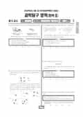

문제지

전국연합학력평가 · 시·도교육청 주관
2023년 4월 고3 학력평가 과학탐구 화학Ⅰ 1등급컷은 원점수 44점(비공식), 표준점수 최고점은 77점입니다.
원점수 1등급컷은 공식 발표값이 아니라 EBSi·입시기관 값입니다. 등급별 값은 등급컷 표, 출처 구분은 데이터 원칙에 있습니다.

시험지를 먼저 풀어 보세요. 등급컷·표준점수·난이도는 흐리게 가려 뒀어요.
| 등급 | 원점수 | 표준점수 | 백분위 | 누적 |
|---|---|---|---|---|
| 1 | 44 | 68 | 96 | 4.07% |
| 2 | 38 | 63 | 89 | 12.44% |
| 3 | 33 | 58 | 77 | 23.51% |
| 4 | 26 | 52 | 61 | 40.34% |
| 5 | 20 | 46 | 39 | 63.13% |
| 6 | 14 | 41 | 22 | 79.98% |
| 7 | 11 | 38 | 12 | 90.96% |
| 8 | 8 | 35 | 4 | 96.88% |
등급별 컷 · 원점수는 EBSi·입시기관 값(비공식) · 만점 50점
| 등급 | 표준점수 이상 | 인원(명) | 비율 |
|---|---|---|---|
| 1 | 70 | 1,548 | 4.07% |
| 2 | 64 | 3,179 | 8.37% |
| 3 | 58 | 4,206 | 11.07% |
| 4 | 52 | 6,395 | 16.83% |
| 5 | 45 | 8,662 | 22.79% |
| 6 | 41 | 6,405 | 16.85% |
| 7 | 39 | 4,171 | 10.98% |
| 8 | 37 | 2,250 | 5.92% |
| 9 | 30 | 1,186 | 3.12% |
시·도교육청 공개 자료
출처: 시·도교육청이 공개한 전국연합학력평가 성적 분석·통계자료(공개 자료 보기).
발행 기관: 시·도교육청(전국연합학력평가). 파일 위치: 이 사이트가 보관한 사본. 저작권은 발행 기관에 있습니다. 원본과 다르거나 게시 중단이 필요하면 연락처로 알려 주세요. 등급컷 출처 구분은 데이터 원칙에서 설명합니다.
막대 색은 역대 대비 난이도 · 진한 막대가 이 시험 · 막대를 누르면 그 회차로 이동
| 회차 | 1등급컷 | 표점 최고 | 1등급 표점 | 난이도 |
|---|---|---|---|---|
| 4월 학평2023년 고3이 시험 | 44 | 77 | 68 | 쉬움 |
| 3월 학평2023년 고3 | 41 | 79 | 71 | 매우 어려움 |
| 10월 학평2022년 고3 | 45 | 70 | 66 | 쉬움 |
| 7월 학평2022년 고3 | 44 | 73 | 68 | 쉬움 |
| 4월 학평2022년 고3 | 44 | 74 | 68 | 쉬움 |
| 3월 학평2022년 고3 | 47 | 74 | 71 | 보통 |
| 10월 학평2021년 고3 | 47 | 71 | 68 | 매우 쉬움 |
| 7월 학평2021년 고3 | 42 | 77 | 69 | 어려움 |
| 4월 학평2021년 고3 | 42 | 77 | 69 | 보통 |
| 3월 학평2021년 고3 | 43 | 77 | 71 | 어려움 |
화학Ⅰ은 응시자 38,002명, 표준점수 최고점 77점, 1등급 구분 70점이었고 양적 관계와 중화 반응 같은 후반부 계산 문항이 오답률 상위를 차지했습니다.
19번(3점, 74.9%)은 A(g)와 B(g)가 반응해 C(g)를 생성하는 반응의 양적 관계 문항, 20번(63.2%)은 XOH·HY·HZ 수용액을 섞은 중화 반응 문항이었습니다.
16번(60.6%)은 25℃에서 HCl과 NaOH 수용액의 몰 농도와 이온 농도를 비교하는 문항이었습니다.
양적 관계 문항은 반응 계수와 질량비를 미지수로 두고 실린더의 부피 변화와 연결해 식을 세우는 연습이 필요합니다.